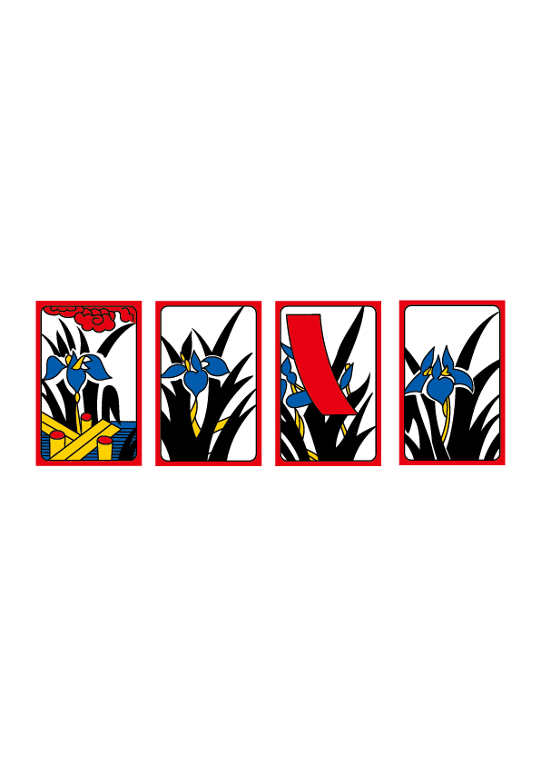

Hwa too
1월 송학
학은 무병장수를 상징하는 동물로 한해의 복과 건강,
장수를 비는 마음이 담겨져 있다.
2월 매조
매화와 새가 그려져 있는 그림으로 아름다운 목소리와
이른 봄을 상징하는 꾀꼬리가 특징이다. 매화의 색을
구별할 수 없을 정도로 눈이 내려 슬피 우는 꾀꼬리를 상징한다.

3월 벚꽃
봄의 상징인 벚꽃이 그려져 있다. 벚꽃이 피우는 날, 벚나무 아래서 술을 즐기는 사람들을 연상하며 그려졌다 한다.
4월 등나무와 두견새
흔히 흑싸리라 불리는 등나무는 4월을 대표하는 나무로 알려져 있다. 아래로 피어 있는 등나무 꽃을 보고 두견새가 날아온 그림이 그려져 있다.

5월 창포
5월의 상징인 창포가 그려졌으며, 다리모양의 구조물은 창포원을 두루 구경하기 쉽게 구불구불 놓은 작은 다리를 표현한 것이다.
6월 목단
향기가 없는 꽃 모란이 그려져 있으며, 본래 한국화는 모란과 나비가 함께 그려지지 않는데, 일본의 영향으로 화투패에 모란과 나비가 함께 있는 것이 특징이다.
7월 싸리와 맷돼지
홍싸리라 불리며, 4월의 흑싸리와 다르게 붉은 꽃이 만개하여 붉게 표현되었다. 멧돼지는 산속의 풍요로운 동물로 알려져 풍요로운 가을이 다가옴을 알린다.
8월 만월
밝고 둥근 달이 그려져 있으며, 새는 기러기가 등장한다. 기러기는 봄이면 왔다가 가을이면 남쪽으로 떠나는 철새로 가을의 청취를 담은 그림이다.
9월 국화
9월은 국화와 술잔이 그려져 있으며, 동양 국가의 민족절 풍습이 담겨있다. 술잔에 국화잎을 띄워마시며 장수를 기원하는데에서 유래되었다.
10월 풍단
단풍이 물들기 시작하며 색채의 변화를 보여주고 있다. 인간의 사슴 사냥에 의해 홀로 남겨진 사슴이 짝을 그리워 하며 서 있는 모습이 그려졌다 한다.
12월 비
비가 내리던 어느 날, 오노도후는 글공부에 진전이 없어, 붓을 꺾고 방을 나섰다. 답답한 마음에 이리 저리 거닐던 중 버드나무 가지에 오르려하는 개구리를 발견하고 노력의 중요성을 깨닫고 훌륜한 서예가가 된다는 일화에서 유래된 그림이다.
1948